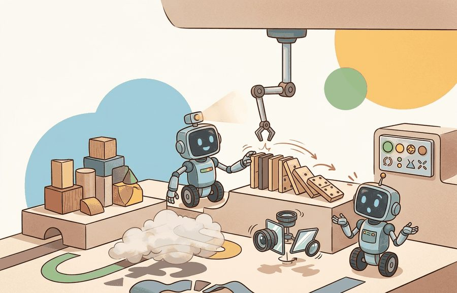
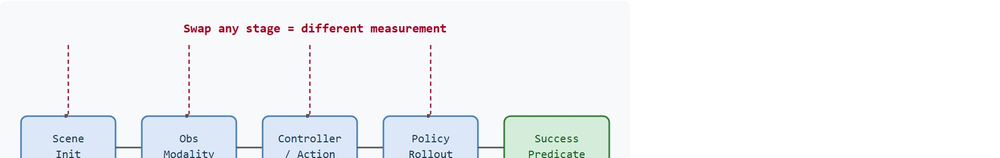

"A manipulation score tells you how well the agent grasped objects in these scenes, with this action space, under this success criterion. Change any one and you are measuring something else."
A Manipulation Benchmark Auditor

This section assumes familiarity with the benchmark validity concepts introduced in section 12.1, particularly the distinction between task name and task contract. Robosuite runs on MuJoCo, so section 11.2 on MJCF and the MuJoCo contact model is useful background for understanding controller and observation choices. The benchmark discipline established here extends directly to language-conditioned suites in section 12.3 (LIBERO, CALVIN, Meta-World) and to long-horizon household evaluation in section 12.4.
Two papers, two robots, the same benchmark name: one team scores 87% on RLBench, the other 61%, yet neither result transfers to a physical arm. In practice, the gap is typically not the algorithm; it is the action space, the observation modality, and the demonstration source, all quietly swapped between runs. Manipulation benchmarks are the proving ground for every contact-rich policy in embodied AI, and the field is finally moving fast enough that benchmark confusion is now the main drag on reproducible progress. By the end of this section you will know how to read a tabletop score as a precise claim, pick the suite that isolates the capability you are studying, and freeze a protocol that survives code updates and collaborator handoffs.
Swap a robosuite controller string from OSC_POSE to JOINT_VELOCITY and the very same policy on the very same lift task can lose twenty points of success rate, even though nothing about the robot's skill has changed: that single line of config is the difference between two papers' headline numbers. This section makes manipulation benchmarks operational, teaching how to read a tabletop result as a claim about contact, vision, demonstration learning, object generalization, task generalization, or scene diversity. As Figure 12.2A illustrates, a manipulation score is only credible when the object, task, demonstration, controller, and observation boundaries are made visible rather than left implicit.
The goal is not to memorize benchmark names. The goal is to design a comparison where ManiSkill3 speed, robosuite controller choices, RoboCasa scene diversity, robomimic datasets, and RLBench task variation are treated as evidence boundaries rather than interchangeable labels.
For Manipulation: ManiSkill3, robosuite, RoboCasa, robomimic, RLBench, treat the leaderboard as an instrument: it is interpretable only when the benchmark isolates the capability, fixes the protocol, and records rerunnable context.
A manipulation benchmark samples an initial object arrangement, exposes robot observations, accepts actions through a controller, and scores whether task predicates (the pass/fail rule the simulator checks, such as "object height above table exceeds 0.04 m") become true. The same task name can change meaning when the action space changes from end-effector deltas to joint torques, when RGB observations become privileged state (ground-truth object pose and velocity handed directly to the policy instead of inferred from pixels), or when demonstrations come from a different controller; the controller mechanics behind that last point are unpacked in the next two paragraphs. Figure 12.2B traces this pipeline stage by stage and shows which suite specializes which stage.

Controller choice matters because physical robots have joint limits, torque saturation (the motor can no longer supply the commanded force), and contact dynamics. These properties amplify or suppress policy errors differently depending on the control interface. An operational-space (end-effector delta) controller hides joint-level complexity behind an inverse-kinematics layer. This makes grasping easier to learn, but it masks whether the policy can handle singularities (arm configurations where the inverse-kinematics solution becomes unstable or undefined) or payload variation. A joint-torque controller exposes the full mechanical chain, so policies must reason about inertia and cable tension. Those challenges determine real-robot reliability. A benchmark result under one interface does not transfer to the other, and real deployments nearly always differ from the interface used during evaluation.
An operational-space controller computes a desired Cartesian end-effector pose. It calls the robot's inverse kinematics solver to get target joint angles, then passes those targets to a low-level PD controller (a proportional-derivative feedback loop that converts a position error into a corrective torque) running at 500 Hz or higher. A joint-space controller skips that layer entirely. It commands torques or positions directly on each joint, so the policy must respect the robot's kinematic chain explicitly. robosuite exposes both modes through a unified wrapper. Swapping the controller string changes the action dimensionality, the action scale, and the physical meaning of every output dimension. So you must freeze the controller name in the result artifact.
So far: controller choice (operational-space versus joint-space) changes what a policy has to learn and how its errors show up, so the split design covered next must be matched to the claim being tested, not treated as an afterthought.
The split must match the claim. For imitation learning, separate training and test demonstrations so trajectory memorization is not counted as skill. For object generalization, hold out object instances or categories. For task generalization, hold out task templates, not merely random seeds for the same template.
The mechanism is a suite-specific measurement pipeline. ManiSkill3 emphasizes GPU-parallel simulation (running thousands of physics environments simultaneously on a single GPU instead of one environment per CPU core, so a policy sees far more contact episodes per wall-clock hour) and manipulation tasks, robosuite emphasizes MuJoCo-based modular manipulation and controller choices, RoboCasa expands household-style manipulation variation, robomimic standardizes demonstration datasets (fixed, versioned collections of recorded human or scripted trajectories, released with a matching train/test split) and offline policy evaluation, and RLBench stresses many vision-guided task variations with demonstrations.
Code Fragment 1 shows a compact leakage audit for manipulation. If the training and test panels share object identifiers, task templates, or demonstration identifiers, the reported success rate may reflect familiarity rather than manipulation competence.
# Audit manipulation splits for object, task, and demonstration leakage.
# The result should be empty before a manipulation benchmark supports
# a generalization claim about held-out episodes.
from dataclasses import dataclass
@dataclass(frozen=True)
class ManipulationEpisode:
task: str
object_id: str
demo_id: str
def as_row(self) -> dict[str, object]:
return asdict(self)
train = {
ManipulationEpisode("lift", "mug_001", "demo_017"),
ManipulationEpisode("stack", "cube_002", "demo_021"),
}
test = {
ManipulationEpisode("lift", "mug_009", "demo_110"),
ManipulationEpisode("stack", "cube_002", "demo_222"),
}
train_objects = {episode.object_id for episode in train}
test_objects = {episode.object_id for episode in test}
print(f"object_leakage={sorted(train_objects & test_objects)}")ManipulationEpisode dataclass and set-intersection check that surfaces cube_002 as a leaked object shared between the train and test panels.In practice, each suite gives you a maintained loader or environment API, but the loader does not decide the scientific claim. Use the official task definitions and dataset tools, then add your own manifest that records controller type, observation keys, action space, object split, demonstration split, seed set, and success predicate.
Input: Research claim $c$ (e.g., object generalization), candidate policy $\pi_\theta$ with parameters $\theta$, suite candidates $S = \{s_1, \ldots, s_k\}$, seed set $\Omega$
Output: Validated result artifact $R$ with success rate $\hat{\rho}$ and full protocol provenance
Trace the protocol algorithm with a tiny concrete example. Claim: object generalization for a lift task. Suite selected: robosuite (controller is a study variable). Seed set $\Omega = \{0, 1, 2\}$.
Step 2 (split): train objects = {mug_001, mug_002, cube_005}, test objects = {mug_009, cube_005}. Verify disjoint: the intersection is {cube_005}, so the split is invalid and must be fixed before proceeding. After fixing, test objects = {mug_009, bottle_004}, intersection is empty.
Step 3 (freeze): observation keys = front_rgb + proprioception, action space = end_effector_delta_pose (7-dim), controller = OSC_POSE, horizon $H = 200$, predicate $\sigma$ = object height above table greater than 0.04 m.
Step 4 (rollout): per-episode success indicators across $\Omega$ for two test objects: mug_009 yields $(1, 1, 0)$, bottle_004 yields $(0, 1, 0)$.
Step 5 (aggregate): per-task rates $\hat{\rho}_\text{mug\_009} = (1+1+0)/3 = 0.67$ and $\hat{\rho}_\text{bottle\_004} = (0+1+0)/3 = 0.33$. Mean $\hat{\rho} = (0.67 + 0.33)/2 = 0.50$. The spread (0.33 to 0.67) is large, so reporting only the 0.50 mean would hide that bottle grasping is the weak case.
Step 7 (leakage audit): $\text{leak}_\text{obj} = |\{\text{mug\_009, bottle\_004}\} \cap \{\text{mug\_001, mug\_002, cube\_005}\}| = 0$. Audit passes, so the 0.50 result is a valid object-generalization number.
When Physical Intelligence evaluated its $\pi_0$ flow-matching policy (a policy trained to predict continuous action trajectories by learning a smooth transformation from noise to actions, rather than by classification or discrete regression), the team ran the same checkpoint across robosuite-style controller modes and held-out object sets rather than reporting a single aggregate, exactly to separate policy skill from protocol advantage. The published per-task tables let readers see that strong mean success masked weak performance on deformable and high-friction objects, which is precisely what a frozen split and per-task reporting are designed to expose.
For Manipulation: ManiSkill3, robosuite, RoboCasa, robomimic, RLBench, compare only metrics co-computed in one benchmark pass with the same task panel, wrappers, seed policy, success definition, and logged failure labels.
The common mistake is importing a baseline number from one manipulation suite or controller mode and comparing it to a new run from another. A robosuite success rate with privileged state, a ManiSkill3 RGBD policy, and an RLBench few-shot result are different measurements unless a single harness normalizes the task contract.
Consider what this looks like in practice. A team trains a diffusion policy on robomimic's human demonstrations for the lift task and reports 94% success. A second team trains a transformer policy in ManiSkill3 on the same task name and reports 81% success. The numbers appear comparable, but the first uses privileged object-pose observations and 200 human demonstrations recorded at 20 Hz with a specific gripper, while the second uses RGB-D (Red-Green-Blue-Depth) images and 50,000 environment rollouts. The 13-point gap says nothing about which policy architecture is better; it measures the protocol gap, not the algorithm gap. In practice, published leaderboards for manipulation often mix these conditions, and readers who do not check the protocol detail column risk treating the numbers as construct-matched evidence when they are not.
Think of two runners who both "ran a 5K" but one ran on a flat track in racing shoes while the other ran up a hill in boots. Comparing their times tells you about the course and footwear, not about who is faster. A manipulation benchmark score is the same: when the controller, observation modality, and demonstration source differ between two runs, the gap between the numbers measures the difference in conditions, not the difference in policy quality. Before any comparison is meaningful, every variable in the setup must be locked to the same value, just as a race comparison requires the same course, weather, and start conditions.
A manipulation team should log the suite name, task template, object IDs, scene ID, demonstration IDs, observation keys, action representation, controller, horizon, seed, success predicate, and video trace. Those fields show whether a method improves manipulation or benefits from easier objects, familiar demonstrations, or a more forgiving controller.
If the object split is leaky, the robot may look like it learned manipulation while really recognizing an old prop in a new pose.
Simulation-to-real transfer via generative scene augmentation (2024-2026). Rather than hand-authoring benchmark environments, labs now generate photorealistic scene variants procedurally and use them to stress-test policies before physical deployment. The GR-2 work from Bytedance Research (2024) showed that training on video-predicted future frames as a world model prior substantially improved transfer from ManiSkill3-style simulation to real Franka arms across unseen object textures and lighting. The direction extends to diffusion-based domain randomization in RoboCasa scenes, where object appearance is randomized at render time rather than being fixed in the asset library.
Dexterous and contact-rich benchmarks beyond parallel-jaw grasping (2024-2026). Parallel-jaw pick-and-place has largely saturated existing suites; active work now targets in-hand re-orientation, tool use, and deformable object manipulation. The ManiSkill3 team released DexArt tasks (multi-finger articulated manipulation) in 2024, and the UMI (Universal Manipulation Interface) work from Stanford (Chi et al., 2024) introduced wrist-mounted diffusion policies evaluated on tasks that require sustained contact forces rather than a single grasp-and-lift. robomimic added deformable cloth and rope tasks to its held-out evaluation suite (as of 2024) specifically to expose contact-model sensitivity.
Foundation-model conditioned evaluation (2025-2026). Benchmarks are shifting from fixed success predicates to language-model or vision-language-model judges that score partial task completion and semantic correctness. The RoboVLMs survey (2024, PKU and Shanghai AI Lab) catalogued how VLM-graded success differs systematically from simulator predicate success on RLBench tasks, revealing that simulator predicates can mark a physically sensible grasp as failure while marking an accidental predicate-satisfying collision as success. Suites built around this gap, including RoboBench (2025), use GPT-4V or Gemini as the primary evaluator alongside a physics predicate, requiring new split discipline: the LLM evaluator must not have seen training demonstrations during its own pretraining.
Open problem for a PhD student. Existing split audits check object ID, scene ID, and demonstration ID for leakage, but none track kinematic fingerprint leakage: a policy pretrained on a large corpus such as Droid or Open X-Embodiment may have memorized gripper velocity profiles for canonical tasks, so a "held-out" evaluation that shares the same task type (even with different objects) is not truly held out. Designing a leakage metric that measures trajectory-space overlap between pretraining and evaluation corpora, and showing how it predicts benchmark inflation, would sharpen reproducibility across ManiSkill3, robomimic, and RLBench simultaneously.
Can you name the manipulation suite, task templates, object split, demonstration split, observation keys, controller, action space, horizon, seeds, and success predicate? If not, the experiment boundary is still too vague.
Once that experiment boundary is sharp enough to name every field in the self-check, the payoff becomes clear: manipulation benchmarks become useful when they make hidden choices visible. A policy trained on robomimic demonstrations may be excellent at reproducing dataset actions but weak under new object placements. A policy trained in ManiSkill3 may benefit from high-throughput exploration but still need an object and task split that tests transfer. A robosuite controller comparison may be valid only inside the chosen action interface.
The graduate-level habit is to ask what each suite contributes to the evidence. ManiSkill3 and Isaac-style GPU workflows scale rollout counts, robosuite makes controller choice explicit, RoboCasa and BEHAVIOR assets broaden household variation, robomimic fixes offline demonstration evaluation, and RLBench tests task-level variation. A paper should name which of those dimensions it measured.
Each suite exists because a specific research question was underserved. ManiSkill3 was designed to answer questions about sample efficiency at scale: when you need millions of rollouts to learn contact-rich behavior, CPU-serial simulators become the bottleneck, so GPU-parallel environments eliminate that bottleneck and let the research question be about the policy, not the infrastructure. The scale difference is concrete: a contact-rich task that requires 50,000 environment episodes to reach 80% success on a CPU-serial simulator can reach the same threshold in roughly 300 episodes when the GPU-parallel renderer fills a batch with 4,096 environments simultaneously, because each gradient step sees a far wider slice of the contact distribution. robosuite was designed because controller choice had been treated as an implementation detail rather than a scientific variable; making it explicit and modular lets a single paper compare joint-space and operational-space control on identical tasks.
Before reading on: if a policy achieves 90% success on a fixed tabletop with three familiar objects, what do you expect its success rate to be in a kitchen with varied layouts, distractor items, and appliances it has never seen? The answer in practice is much lower, and that gap is exactly the motivation for the suites below. RoboCasa addresses the narrowness of tabletop-only benchmarks: real kitchens have layout variation, distractor objects, and diverse appliances, so a policy that works on a fixed table with three canonical objects has not been tested on the actual distribution. robomimic exists because most imitation-learning papers before it trained and evaluated on the same demonstrations without a held-out set, making reported numbers unrepeatable; its standardized dataset releases and evaluation protocol convert a reproduction problem into a comparison problem. RLBench targets task-level generalization: its 100-plus task variants, each with multiple language phrasings and visual configurations, are calibrated so that a policy cannot succeed by recognizing a single fixture arrangement. Knowing why each suite was built tells you immediately when to use it and when its design assumptions do not match your research question.
| Suite | Useful for | Protocol detail to freeze |
|---|---|---|
| ManiSkill3 | GPU-parallel manipulation and reinforcement learning workflows | Environment count, rendering mode, task IDs, object split, seed list, and success predicate. |
| robosuite | MuJoCo-based robot manipulation with modular robots and controllers | Robot, controller, action space, horizon, observation keys, and reward or success definition. |
| RoboCasa | Everyday household manipulation with richer scene and object variation | Scene split, object instance split, task template split, and language or goal specification. |
| robomimic | Offline imitation and demonstration-driven policy evaluation | Dataset version, demo IDs, train/test split, observation modality, and evaluation rollout seeds. |
| RLBench | Vision-guided multi-task and few-shot manipulation | Task families, variation numbers, demonstration split, camera set, and success predicate. |
A robust manipulation benchmark starts with a split file. The split file should list task templates, object IDs, scene IDs, demonstration IDs, and seeds. The evaluation runner should consume that file for every method so a new policy cannot quietly choose easier episodes.
Code Fragment 2 turns the manipulation protocol into a result artifact. The important field is split_name, because it keeps a reported success rate attached to the held-out condition it actually measured.
# Record a manipulation result with the split and controller attached.
# A success rate without these fields is not comparable across suites
# or even across two runs from the same suite.
from dataclasses import dataclass, asdict
@dataclass
class ManipulationResult:
suite: str
split_name: str
controller: str
observation: str
seeds: tuple[int, ...]
success_rate: float
def as_row(self) -> dict[str, object]:
return asdict(self)
result = ManipulationResult(
suite="RLBench",
split_name="heldout_task_variations",
controller="end_effector_delta_pose",
observation="front_rgb+proprioception",
seeds=(10, 11, 12, 13, 14),
success_rate=0.62,
)
print(result.as_row())ManipulationResult dataclass that serializes an RLBench success rate together with its split name, controller, observation modality, and seed tuple into one comparable row.A frozen result artifact tells you what was measured, but it does not tell you why a low number came out the way it did, and that is where failure localization takes over. When a manipulation experiment fails, localize the failure before changing the model. Replay the episode and tag whether the failure came from perception, grasp approach, contact instability, controller saturation, recovery, task-predicate scoring, or a held-out split mismatch. This prevents a model change from masking an evaluation problem.
A common assumption is that a high success rate on a manipulation benchmark (ManiSkill3, robosuite, RoboCasa, robomimic, or RLBench) means the policy will work on a physical robot. This is wrong because each suite defines success through a simulator predicate evaluated under a specific controller, observation modality, and object set that rarely matches the noise, latency, and sensor calibration of a real deployment. The correct mental model is that a benchmark score is evidence about the policy under the exact protocol used, not a certificate of physical competence. Real-robot transfer requires a separate evaluation that accounts for actuation delay, camera calibration error, contact dynamics mismatch, and object texture variation that simulators approximate rather than reproduce.
A policy that scores perfectly in simulation but collapses on hardware is not a strong policy; it is a well-rehearsed one that never met the real stage.
Manipulation benchmarks are useful when their suite choice, split design, controller, observations, seeds, and success predicates match the manipulation claim being made.
Pick one manipulation claim, such as object generalization or task generalization. Choose ManiSkill3, robosuite, RoboCasa, robomimic, or RLBench, then specify the split fields and name one leakage path that would invalidate the result.
Goal: measure empirically how much a single benchmark number depends on the controller, holding everything else fixed, so you experience the protocol-gap-versus-algorithm-gap distinction firsthand.
Tools needed: Python 3.10+, robosuite (pip install robosuite) which ships with MuJoCo, and a behavioral-cloning policy or even a fixed scripted lift policy. No GPU required for a short run.
What to do: Load the robosuite Lift task with the Panda arm. Run 50 evaluation episodes with the same fixed seed list under two controllers by swapping only the controller config string: first OSC_POSE (operational-space, end-effector deltas), then JOINT_VELOCITY (joint-space). Keep observation keys, horizon, object set, and success predicate identical across both runs.
What to vary: only the controller string. As an extension, also toggle the observation modality between privileged object-state and camera agentview_image.
What to observe: the per-episode and mean success rate under each controller. You will typically see a double-digit gap for the same policy, demonstrating that a reported success rate is meaningless without the controller name attached. Record both numbers in a ManipulationResult-style artifact (see Code Fragment 2) and confirm the two rows are not directly comparable.
Beginner (weekend): Build a robosuite leakage auditor that loads the default Lift dataset, splits demonstrations by object instance using a Gymnasium-compatible wrapper, and prints a pass/fail report showing whether any object IDs appear in both train and test sets. The key challenge is writing a split manifest that attaches controller and observation keys to each demonstration so the report is reproducible from a single config file.
Intermediate (1-2 weeks): Implement a cross-suite comparison harness that runs the same behavioral cloning policy on ManiSkill3 and robosuite variants of a pick-and-place task and produces a side-by-side table of per-task success rates with failure labels. The key challenge is writing a shared evaluation loop that freezes the action space, observation keys, and success predicate independently for each suite so the gap between numbers measures the benchmark difference rather than an accidental protocol difference.
Section 12.3 → shifts from one manipulation panel to transfer over task sequences, language instructions, adaptation budgets, and forgetting.
James, S. et al. (2019). "RLBench: The Robot Learning Benchmark and Learning Environment." arXiv.
RLBench frames a large set of vision-guided manipulation tasks with demonstrations and task variation. It is useful for readers studying few-shot, multi-task, and manipulation benchmark design. Readers should connect this source to manipulation: maniskill3, robosuite, robocasa, robomimic, rlbench when deciding what is reusable, what is benchmark-specific, and what must be remeasured.
ManiSkill Contributors. "ManiSkill Documentation."
ManiSkill provides manipulation tasks, demonstrations, GPU-parallel workflows, and documentation for robot-learning experiments. It is relevant when this section asks how benchmark design turns simulator capability into comparable evidence. Readers should connect this source to manipulation: maniskill3, robosuite, robocasa, robomimic, rlbench when deciding what is reusable, what is benchmark-specific, and what must be remeasured.
RoboCasa Team. "RoboCasa Documentation."
RoboCasa documents everyday manipulation tasks and simulation assets, including the 2024 release lineage and later RoboCasa365 expansion. Readers should use it to study how task diversity and environment generation affect benchmark claims. Readers should connect this source to manipulation: maniskill3, robosuite, robocasa, robomimic, rlbench when deciding what is reusable, what is benchmark-specific, and what must be remeasured.
Mandlekar, A. et al. "robomimic Documentation."
robomimic provides datasets and algorithms for learning from demonstrations. It matters here because benchmark evaluation often depends as much on dataset format and split discipline as on simulator physics. Readers should connect this source to manipulation: maniskill3, robosuite, robocasa, robomimic, rlbench when deciding what is reusable, what is benchmark-specific, and what must be remeasured.
Stanford Vision and Learning Lab. "BEHAVIOR-1K."
BEHAVIOR-1K grounds household embodied AI tasks in human needs and long-horizon mobile manipulation. It gives benchmark designers a concrete example of task suites that go beyond isolated tabletop success rates. Readers should connect this source to manipulation: maniskill3, robosuite, robocasa, robomimic, rlbench when deciding what is reusable, what is benchmark-specific, and what must be remeasured.